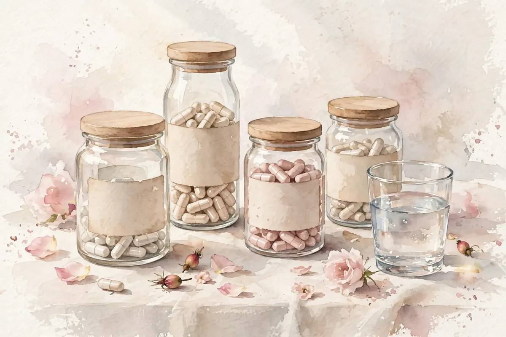

トップ ＞ インナーケア・サプリ ＞ 機能性表示食品の届出表示の読み方
機能性表示食品の届出表示の読み方

サプリメントのパッケージを見ていると、「機能性表示食品」という言葉に出会うことがあります。似た言葉に「栄養機能食品」や「特定保健用食品」がありますが、それぞれ表示の仕組みが違います。施術の現場でも、「この表示は何を意味しているのか」と聞かれることがあります。この記事では、機能性表示食品の届出表示の読み方を整理します。特定の商品の話ではなく、パッケージの表示を読むための考え方です。
届出表示はどこに書かれているか
機能性表示食品は、事業者が機能性に関する科学的根拠などの情報を、消費者庁に届け出たうえで販売する食品です。「届出表示」とは、その届け出た内容をパッケージに表示したものを指します。表示は、パッケージの表面だけでなく、側面や裏面に書かれていることが多いです。表面に「機能性表示食品」と大きく書かれていても、届出表示の本文は裏面にある、という場合があります。まずはパッケージを一通り見て、届出表示の文章を探します。
届出表示の文章には、機能性関与成分の名前と、その成分がどのような働きを報告しているかが書かれています。たとえば「○○には、△△の機能があることが報告されています」という形です。「報告されています」という書き方になっているのは、届け出た内容をそのまま表示しているためです。特定保健用食品の「許可表示」とは仕組みが違う、という点も、表示を読むときの手がかりになります。
「届出番号」と「機能性関与成分」の見方
届出表示と一緒に確認したいのが、「届出番号」です。機能性表示食品には、届出ごとに番号が付いています。番号が書かれている場合は、その商品の届出が、消費者庁の公開情報で確認できる仕組みです。番号が見つからない場合は、パッケージの別の面に書かれていないか、確認してみてください。
次に見るのは、「機能性関与成分」の名前と量です。届出表示に書かれている成分名が、原材料名の欄にもあるか、1日当たりの摂取目安量にどのくらいの量が含まれているかを確認します。成分名が似ていても、原材料名の表記と届出表示の成分名が違う場合があります。表記のゆれがあるときは、届出表示の成分名を基準に、原材料名の欄と照らし合わせます。1日当たりの摂取目安量も、届出表示とセットで書かれていることが多いです。1日に何粒・何杯が目安なのか、まず確認します。
表示を読むときの注意点
機能性表示食品のパッケージには、「疾病の診断、治療、予防を目的としたものではありません」という趣旨の注意書きが入っています。この一文は、機能性表示食品の表示の前提を示すものです。届出表示は、健康の維持・増進に関する機能を報告するもので、病気を治すための表示ではありません。この一文があるかどうかも、表示を確認するときの手がかりになります。
ほかにも、摂取上の注意として「1日当たりの摂取目安量を守ること」「体調に異変を感じた際は、速やかに摂取を中止し、医師に相談すること」といった趣旨の表示があることが多いです。薬を飲んでいる方や、通院中の方、妊娠中・授乳中の方への注意書きがある場合もあります。自分に当てはまる注意書きがあるかどうか、購入前に確認しておくことが大切です。
機能性表示食品を選ぶときは、届出表示の内容と、自分の目的が合っているかを照らし合わせます。届出表示に書かれている機能と、自分が期待していることが同じかどうか、1日当たりの摂取目安量を続けられるかどうか、という観点で見ます。表示の読み方が分からないときや、体調のことで気になることがあるときは、医師や薬剤師などの専門家に相談してください。この記事は表示の読み方の案内であり、商品ごとに表示がある場合は、そちらが優先です。
セラフィナ「届出表示は“届け出た内容”のメモ。どんな機能が報告されているか、番号と一緒に確認してみて」

セラフィナ｜美容の道具箱の案内役
「量と表示が分かれば、美容は失敗しない。」——セラフィナと白猫のモコが、買う前のチェックポイントを案内します。綺麗になりたい気持ちに正直に、でも表示は冷静に読むのが、このサイトの約束です。